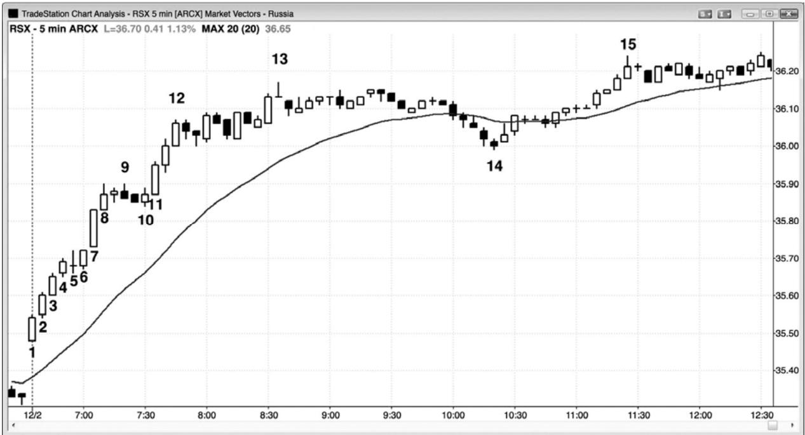
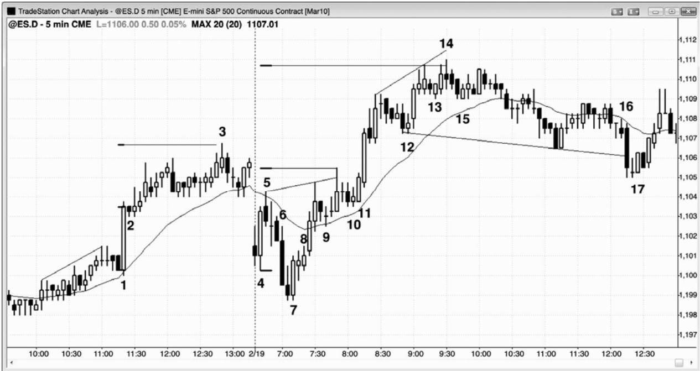
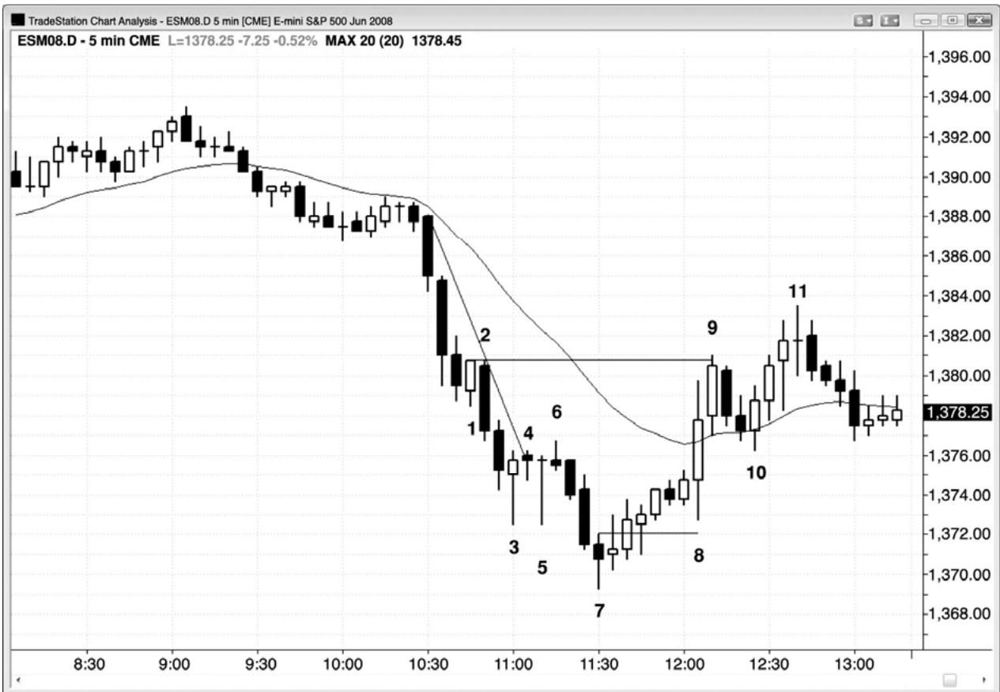

第3章 初始突破¶
第 3 章 初始突破
在大多数市场的 5 分钟图上，每天通常都至少出现几次成功的重要突破。大多数突破的起始棒通常比之前的棒线大，而且没有尾线或只有很短的尾线。在最强的突破中，将形成一系列几乎没有重叠的趋势棒。举例说明，在 5 分钟电子迷你图表上，当出现强多头突破时，一旦突破棒收盘，有些交易者就会把限价单设在那一棒的收盘价买进。如果下一棒在那一价位开盘，并且在没有跌至那一价位下方的情况下立即上涨，那么他们所设的限价单很可能不会被执行，这些看涨的交易者们将被套出场外。他们将体验到一种紧迫感，因为他们担心错过那一波运动，他们会准备尽可能快地做多，使用市价单或限价单在一两个跳动或小幅回撤买进，或者，他们会切换到更小的时间框架图表，比如 1 分钟或 2 分钟图，然后在高点 1 或高点 2 回撤入场。这在情绪上常常很难做到，可以与高台跳水相比。在做这种交易和高台跳水时，可能所要做的就是：捏住鼻子，紧闭双眼，绷紧全身的每一块肌肉，相信自己不会伤得太厉害，那种不好的感觉很快就会结束。如果你交易电子迷你，那么就在小幅回撤买进，依靠自己的止损。如果突破不错，那么你的止损不会被击中，在接下来的很多棒上，你很可能赚到 2 点，甚至 6 点或更多点，而风险只有大约 2 点。
相反地，如果没有一连出现几条很强的多头趋势棒，而是在一两棒突破之后出现一条小型棒、一个十字星、一条尾线很长的棒线、或者一条空头趋势棒，那么突破可能失败。市场可能返回交易区间，或者反转进入空头趋势，或者形成一个失败的反转，在一两棒回撤后上涨运动恢复。当突破成功时，它会产生某种类型的尖峰和通道趋势。
当你在一天收盘后观察突破入场时，它们看起来简单得难以相信。但是，在实时交易时，那些架构要么不清晰，要么很恐怖。
无论在突破时入场，还是在突破棒收盘后入场，都是难以操作的，因为突破尖峰通常很大，而且交易者们不得不快速决定去冒比平常高得多的风险。
因此，他们最后常常选择等待回撤。虽然他们减小头寸规模，以使得资金风险与其他任何一笔交易相同，但是跳动数风险为平时的两到三倍，令他们感到害怕。回撤入场的难点在于每个回撤都是从一个微型反转开始的，交易者们担心回撤可能是一次深幅调整的开始。如果反转只有一两棒，并且形成一个突破回撤入场，那么他们害怕入场，因为他们担心市场可能进入交易区间，如果市场正在形成一个多头突破，那么他们不希望在顶部买进，如果市场正在形成一个空头突破，那么他们不希望在底部卖出。趋势会竭尽所能地把交易者们排斥在外，这是它们能够让交易者们整天追逐市场的唯一方法。当一个架构简单明了时，之后的运动通常是小而快的刮头皮式运动。如果一波运动打算行进较长时间，那么它必须是模糊的，而且很难交易，以便把交易者们阻挡在外，迫使他们追逐趋势。
你经常会听到权威们讨论某只股票持续一两天的抛盘是由某条坏消息引起的，比如令人沮丧的收盘报告或管理层变更。他们正在决定新闻只是其他方面很强的多头趋势中的一日事件，还是它将改变那只股票在接下来几个月的走势。如果他们认为几率偏向于多头趋势，那么他们会在空头尖峰的底部区域买进。如果他们认为新闻非常严重，那只股票将在数月内承受向下的压力，那么他们不会买进，实际上他们准备在下一波反弹时卖出全部多头头寸。技术交易者们把那种抛盘看作一个空头突破，根据突破的力量来评估那只股票。如果尖峰看起来很强，那么他们将在反弹时做空，甚至可能在那一棒收盘做空，预期出现更大的尖峰、尖峰和通道、或者其他某种类型的空头趋势。如果与多头趋势相比突破看起来较弱，那么他们将在那条空头趋势棒的收盘价和低点附近买进，预期突破失败，趋势反转尝试只是成为又一个多头旗形。

P57
最强的突破带给人一种紧迫感，一连出现几条趋势棒，比如在图 3.1 中俄罗斯市场向量ETF RSX 中的开盘起多头趋势中所出现的情况。市场向上突破了昨天最后一小时内形成的交易区间。注意，突破中几棒的低点没有跌破前一棒的收盘价。这就意味着等待该棒收盘的多头在它收盘后立即在那一收盘价位设置限价单买进，他们的订单很可能没有被执行，他们将被套出市场之外。市场正在离他们远去，他们知道这一点，将会选择任意理由做多。这种紧迫感导致市场迅速上涨。这一系列的棒线应该被看作一个尖峰。多头尖峰之后通常是多头通道，它们一起构成一轮尖峰和通道多头趋势。
棒 6 是一条内包棒，是第一次暂停，在开盘起多头趋势日，它通常是可靠的高点 1 多头入场。但是，当趋势如此强劲时，你可以简单地在市价买进，或者以任意理由买进。亚马逊的某个地方去年下雨了吗？那么买进。去年，你孩子所在的高中篮球队里有人得了一分吗？那么买进更多。你需要做多，并且一直做多，因为可能有超过 70%的几率市场将形成一波向上的测量运动，其高度等于或大于尖峰的近似高度（棒 1 的低点或开盘价至棒 4 或 8 的收盘价或最高价，然后把这些点数加在那些棒线的收盘价上）。精确的几率没有人知道，但是根据经验，这是非常强的突破，此时测量运动形成的几率很可能大于 70%。从棒 1 开盘价到棒 4收盘价的向上的测量运动，是市场在棒 8 顶部暂停的价位。以棒 1 开盘价至棒 8 收盘价为基准的测量运动，在当日收盘时被超出了 8 美分（未给出）。

P58
在5分钟电子迷你图表上，突破很常见，但是像图3.2中棒1和棒11那样拥有几条坚持到底棒，强劲而成功的突破，通常一天只有一到三次。
棒 1 向上突破一个小型楔形的顶部，它的上下尾线均较短，是一条大型多头趋势棒。
棒 2 是一条小型空头内包棒，既是一个失败的空头突破架构的信号棒，也是一个突破回撤多头架构的信号棒。记住，内包棒是单棒交易区间，是任一方向的突破架构。突破常常引起测量运动，一种常见的形态是从尖峰的开盘价或低点到尖峰收盘价或设点的测量运动，然后从那个尖峰的收盘价或最高价向上投影。这里，截止当日高点棒 3 的运动，是从突破棒棒1 的开盘价到收盘价的一波测量运动。
开盘区间常常引起突破，然后是测量运动，但是测量点通常存在几种可能，最好首先关注最近的目标。交易者们应该观察棒 4 低点至棒 5 高点。一旦那一测量运动目标被超越，交易者们就应该观察其他可能的目标。一个失败的楔形常常引起一波测量运动，但是交易者们需要考虑他们能够看到的每一种可。举例说明，他们可能观察棒 7 低点至楔形的高点（棒 9后面第 2 棒）。但是，那个楔形开始于棒 4，棒 7 更低低点可能被看作是对实际棒 4 低点的一个过冲。市场试图形成一个从棒 4 低点开始的楔形空头旗形，它包含三个上推（棒 5，以及棒 9 前后的尖峰）。利用棒 4 低点至楔形顶部投影的测量运动，在棒 14 当日高点仅被超出 1个跳动。寻找这些测量运动目标的目的是寻找合理的获利了结区，如果存在很强的逆势架构，那么就在反向开仓。
棒 6 是一个很强的突破，突破至当日一个新的低点，但是它被棒 7 外包上涨多头趋势棒向上反转。当交易者们看到截止棒 8 的横盘行为时，他们正在考虑那可能是一个突破回撤（一个空头旗形），接下来可能形成另一波下跌。你必须时刻考虑多方和空方的交替。非但没有出现更多的卖压，而是市场快速上涨。这样强的一条空头趋势棒怎么会被如此迅速地向上反转呢？如果机构拥有大量的买单，那么他们希望在最佳价位执行，如果他们认为市场在上涨前很可能测试棒 4 低点的下方，那么他们会等待在测试后买进。当市场正在靠近他们的买进区时，他们买进是不合理的，因为他们认为市场在接下来的几分钟将会再跌一点。于是这些非常渴望买进的多头正在一旁观望。强势买家的缺乏使市场向卖方倾斜，于是市场不得不迅速下跌，以便让空方找到愿意站在交易另一侧的买家。结果产生一条大型空头趋势棒。一旦市场到达多方认为它不会进一步下跌的价位，多方就突然冒出来开始重仓持续买进，压倒空方。空方认识到正在发生什么，他们停止做空，开始买回他们的空头。这就意味着多空双方都相信市场将会上涨，这就使得等距运动的方向性概率偏向于多方，达到 60%或更高。换言之，市场在下跌两点前上涨两点，或者在下跌 3 点前上涨 3 点的几率为 60%或更高。实际上，可能有高于 60%的几率市场向上突破开盘区间，在出现两点回撤前形成一波向上的测量运动，对于多方来说，这是一笔很棒的交易。
棒 9 和 10 是当日新高后出现的突破回撤。
棒 11 突破了开始于棒 5 高点的楔形。它是一个很强的双棒多头尖峰，之后是另外两次上推。尖峰之后的多头通道常常会出现三次上推，其中尖峰的顶部是第一次上推。
棒12是强多头趋势中的一个两条腿高点2突破回撤，是一个很棒的买进架构。
棒 13 是又一个突破回撤，但是由于它会引起第三次上推，所以多方必须谨慎。一旦棒15 击中多头入场上方 5 个跳动，很多多头就把他们的上操调至盈亏平衡点，因为他们怀疑棒14 楔形高点是否会引出一个很长的（10 棒或更长）两条腿回撤，或者甚至是趋势反转。所以，棒 15 是一个不好的做多信号，预期任意反弹都将在棒 14 楔形高点下方结束，然后至少再出现一条下跌腿。激进型的交易者们会在它的高点上方做空，因为一个很可能失败的买进信号，意味着交易者们可以在新手们刚刚做多的位置做空，他们拥有 60%的几率，市场在击中他们设在高出 6 个跳动处的获利了结限价单前，会下跌两点触发弱势多头的保护性止损。他们正在冒着 6 个跳动的风险去赚取 8 个跳动的利润，拥有 60%的自信他们会获胜，这是一笔合理的交易。
棒16向下突破一个头肩顶，但是由于大多数顶部形态实际只是多头旗形，所以那次突破很可能失败。多方可能会在后面的小型十字内包棒上方买进，但是这可能有点冒险，因为十字星棒不是可靠的信号棒。一旦他们看到棒17多头趋势棒，他们就在楔形多头旗形买进，因为那是一个更为可靠的形态。在强多头棒上方买进增加了成功率，因为市场已经展示出一些力量。由于强势突破通常会包含几条连续的趋势棒，而不是在下一棒出现一个小型十字星，所以交易者们把这种情况看作空头突破很弱的征兆。

P59
如图 3.3 所示，有些肯定要发布的新闻在太平洋标准时间上午 10:30 引起快速的下跌。你应该永远不要去关注那些新闻，除了知道它何时将要发布之外，因为它将在你和你必须进行的操作之间制造一段距离。在考虑它时你不得不与图表进行调和，那只会减少你的利润。图表会告诉你所需的一切。发生了什么事情令机构积极卖出，那就是一名交易者所需的全部信息。是时间寻找空头架构了。
棒 1 是一条强多头趋势棒，把利用 K 线形态或较小时间框架反转买进的早期入场的买家套住。买入信号甚至在 5 分钟图上也没有被触发，因为下一棒没有向上超越棒 1 高点。这些多头将在棒 1 低点下方离场，直到更多价格行为展开，他们将不会再次买进。在棒 1 低点下方 1 个跳动处使用止损单做空，那些多头正把保护性止损设在那里，当他们回补时，将提供大量的下行动能。如果那一价位被击中，你知道被套的多头将被踢出场外，不会马上希望再次买进，聪明的交易者们将正在加大他们的空头仓位。由于没有人再买进，所以几乎可以肯定，市场将提供一笔刮头皮交易的利润，而且很可能会更多。
棒 5 是第三条重叠棒，而且至少有一棒是一个十字星（三棒全是）。这是带刺铁丝形态，通常是延续形态，就像所有交易区间一样，你永远不应该在它的高点买进，在它的低点卖出。你可以在它的极点处的小型棒线做逆势交易，因为所有水平交易区间都具有磁力，常常成为最终旗形，你可以等待趋势棒突破失败，寻找返回区间的反转。这里，棒 7 收盘高于其中点，所以满足了反转棒的最低要求，而且它出现在第三个卖出高潮之后。这通常会紧跟着至少两条腿和 10 棒的调整。
棒 3 和 5 是经典的 K 线陷阱。记得 K 线反转形态的交易者们，渴望在这些具有非常长的尾线的大型 K 线上买进，因为他们把长尾线和收盘靠近高点看作多方正在取得控制权的证据。在空头趋势中，当你看到尾线很长、实体很小的大型棒线时，它告诉你，如果你在它的高点上方买进，那么你正在做一笔很不划算的交易。在空头趋势中，你希望在低点买进，而不是当市场处于紧凑通道内、之前多头没有展现出力量或者趋势线未被突破时，在实体很小的大型棒线顶部买进。棒 5 甚至是一个比棒 3 更好的 K 线陷阱，因为它是一个墓碑十字星（gravestone doji），是 K 线新手们尊崇的形态。另外，市场超越了那一棒的高点，看起来确认了多头的力量，它是底部的第二次尝试（与棒 3 形成一个双重底）。但是哪里出问题了呢？在仍未出现趋势线突破的强趋势中，当你看到这些实体很小的大型 K 线时，你应该感到兴奋，因为它们是很棒的陷阱，所以是完美的空头架构。只要等待接下来通常出现的小型棒线就可以了。向上的坚持到底的缺乏使得这些提早入场的多头非常恐慌。每个人都知道那些多头把他们的保护性止损设在哪里，所以你应该就把自己的入场止损单设在那里做空。当你看到那些大型十字星 K 线时，你也看到了看涨的力量，但是由于价格悬在那些棒线的高点附近，多方现在与空方处于平衡状态，所以那些棒线的高点很可能是在交易区间的中部或顶部，而不是在底部。
截止棒 6 的两条腿横盘运动突破了趋势线。然后，交易者们知道多方的买进越来越积极，所以一个完美的多头架构将是一个向新低的失败突破。聪明的交易者只是在等待对棒 3 和棒5 的向下的一两棒突破，然后开始把买单设在前一棒高点上方 1 个跳动处。如果那些订单未被执行，那么他们准备把订单下移。如果市场继续大幅下跌，那么他们将等待另一个趋势线突破，然后才准备再次买进，因为趋势可能恢复，这一架构可能未被触发。早先失利两三次的多头这次将会等待确认，入场较迟，当价格行为多头交易者入场后，他们将为市场上涨提供额外的燃料。
P60
尽管棒 7 拥有一个空头实体，但至少它是收盘于中点之上，所以表现出一些力量。大概是多方在棒1、3和5的入场失败后有一点谨慎。另外，它是对带刺铁丝形态的失败的突破，那常常形成趋势的最终旗形。这将是一笔可获利多头交易的几率非常高，聪明的交易者们早已预料到，所以没有理由错过它。
入场棒拥有一个多头实体，尽管短小，但也是有助益的。另外，它是一个内包实体的变种（它的实体位于信号棒的实体之内，是内包棒的一种较弱的版本），那就意味着空方并未取得控制权。在这一点，多方感觉很自信，因为他们的保护性止损在入场棒的后一棒并未被触发，就像早期多头的情况一样。
下三棒都是多头趋势棒，收盘价都高于前一棒收盘价，所以收盘价处于呈现出多头趋势。可以合理地假设将出现两条上涨腿，但是几乎可以肯定的是，在第二条腿之前，将出现一波测试止损的下跌。在棒 8 的剧烈下跌中，盈亏平衡止损被未被击中，棒 8 演变为一条多头外包棒，成为第二条上涨腿的起点（一个更高的低点）。每当出现一条很强的外包上涨棒，使市场突破进入一轮新趋势时，它的低点就是趋势的起点，所有棒线计数被复位（译注：即需要重新计数）。举例说明，棒 9 处的双棒反转是一个低点 1 架构，不是一低点 2 架构。
反弹的目标是空头趋势中的多头信号棒高点（棒 3 和棒 5 的高点，也可能是棒 2 高点）。棒 9 超越了最后目标一个跳动。动能如此强劲，以至于棒 8 低点很可能只是第一条上涨腿的一部分，而不是第二条上涨腿的起点，取而代之的是更大的回撤，然后是第二条上涨腿（它在棒 11 结束）。
从棒 8 低点开始的向上反弹开始计数，棒 11 形成一个低点 2 空头架构。